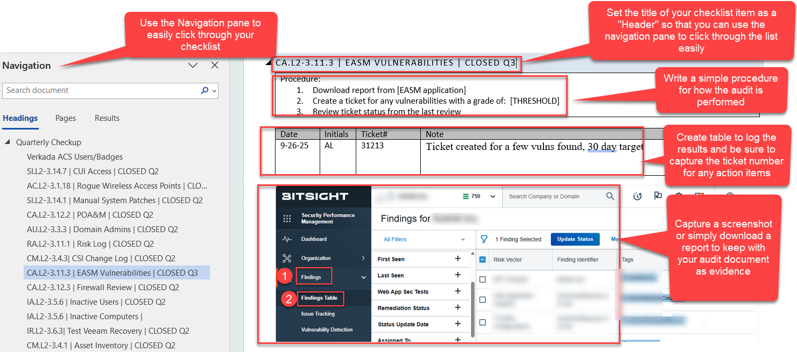

Regular Security Audits: A Sample Checklist
Introduction
An effective cybersecurity audit schedule is foundational for CMMC compliance and risk reduction. A solid continuous monitoring plan incorporates frequent and systematic reviews of controls such as access management, incident response, vulnerability remediation, backup integrity, and patch management. Selecting appropriate intervals is critical for providing assurance and detecting important events before they become major issues.
-Audit Frequency-
Try to align your audit schedule of critical controls with asset value, attack surface dynamics, historical incidents, and regulatory requirements. Highly critical systems or those exposed to novel threats may warrant increased review intervals.
- Weekly audits should focus on highly dynamic, high-risk areas such as privileged user activity, remote access logs, vulnerability scan reviews, and incident response ticket closure. These activities enable early detection of security breaches or control lapses before they escalate.
- Monthly audits are optimal for controls where trends and emerging risks can be detected over a slightly longer timeframe. This includes patch management validation, backup restoration tests, firewall reviews, and EASM/CSPM vulnerability reports. Monthly cadence ensures adequate visibility and time to address any findings between audits without producing excessive operational overhead.
- Quarterly audits should be reserved for items with more stable risk profiles, such as dormant user account reviews, inventory reconciliation, POA&M reviews, and manual wireless access scans. Quarterly review balances thoroughness with practicality where change is less frequent.
----Sample Audit Checklist Template-------
Your checklist doesn’t have to be complicated, in fact the simpler the better. It should give you a simple way to log your activities, track any resulting findings and action items, and regenerate a new checklist each time with out hassle. Here is a very basic Word template as an example.
Sample Checklist Items
Here's a good list of audits to start with. Every environment is different, tailor these to capture what matters to you and your business. I mapped these to CMMC controls to support typical aerospace companies dealing with DoD regulations, but there are mapping documents available to map these to ISO 27001, NIST CSF.
Remote Access Logs (AC.L2-3.1.12)
- Importance: Detects misuse or unauthorized remote connections, a common cyberattack vector.
- CMMC Alignment: Shows oversight and monitoring required for remote access control and anomaly detection.
- Suggestions: Extract VPN/RDP logs; test alerting for unusual geolocations, times, or devices; cross-check logs with termination or revocation lists.
VPN MFA (IA.L2-3.5.3.2)
- Importance: MFA for VPNs prevents credential stuffing and unauthorized access even if passwords are compromised.
- CMMC Alignment: Satisfies multi-factor authentication requirement for remote local and network access.
- Suggestions: Check configuration for mandatory MFA for all VPN users; perform MFA test logins; ensure bypass is not allowed except in documented, approved scenarios.
Risky Users & Logins (SI.L2-3.14.7)
- Importance: Identifies compromised accounts or risky behaviors to proactively block or remediate threats
- CMMC Alignment: Addresses requirements for monitoring user actions and flagging anomalies.
- Suggestions: Review risk detection rules; check periodic reports for flagged high-risk users; confirm incident follow-up actions for detected risks.
MFA Temporary Access Pass (IA.L2-3.5.3.1)
- Importance: Temporary access paths can defeat MFA if not controlled; risking backdoors for attackers.
- CMMC Alignment: Proper controls on temporary bypasses for authentication underpin secure identity management.
- Suggestions: Audit logs for creation/use of temporary passes; check approval process; verify time-limited and auto-expiry enforcement.
iPhone Patches (CM.L2-3.4.1)
- Importance: Mobile device vulnerabilities are rapidly exploited in active attacks.
- CMMC Alignment: Satisfies requirements to keep all assets, including mobile, fully patched.
- Suggestions: Pull status from MDM; random sample devices for patch version compliance; cross-check announced vulnerabilities vs. organizational patch state.
New Hire Training (AT.L2-3.2.1)
- Importance: Ensures staff understand threats, policies, reporting, and secure behaviors from day one.
- CMMC Alignment: Delivers on the requirement for regular and role-based security training.
- Suggestions: Verify training logs for all new hires; review training content for CUI and DoD awareness; sample completion rates and quiz/test scores.
Audit Change Logs (CM.L2-3.4.3.1)
- Importance: Tracks system and document changes for accountability, problem analysis, and rollback.
- CMMC Alignment: Mandates auditing and review of configuration and system changes.
- Suggestions: Review change logs for completeness and tamper evidence; sample change requests for proper documentation and approvals.
EDR Gaps in Coverage (CA.L2-3.12.4, CA.L2-3.12.4.1)
- Importance: Identifies holes in security posture, guides remediation, and supports operational resilience.
- CMMC Alignment: Regular reviews and adjustments match the requirement for continuous assessment of controls effectiveness.
- Suggestions: Review Secure Score dashboard; check regular reports for unresolved issues; document remediation performed or exception justifications.
Vulnerability Remediation (RA.L2-3.11.3)
- Importance: Keeps systems secure by resolving known holes before attackers exploit them.
- CMMC Alignment: Requires documented, timely action on identified vulnerabilities.
- Suggestions: Review open/closed tickets in vulnerability management system; compare scan findings vs. patch deployments; verify closure deadlines and exception tracking.
CUI Access Review (SI.L2-3.14.7)
- Importance: Minimizes risk of unauthorized data exposure or data loss incidents.
- CMMC Alignment: Protects CUI by ensuring proper user access through regular review.
- Suggestions: Pull and review access lists for CUI data repositories; validate permissions with data owners; log and track all updates/removals.
Rogue Wireless Access Points (AC.L2-3.1.18)
- Importance: Prevents attackers from establishing unapproved network backdoors or eavesdropping points.
- CMMC Alignment: Meets requirement for control of wireless access and monitoring.
- Suggestions: Perform regular wireless scans; maintain an inventory of authorized APs; investigate any unknown devices and document outcomes.
Manual System Patches (SI.L2-3.14.1)
- Importance: Ensures exceptions and manual interventions are just as robust as automated patching.
- CMMC Alignment: Aligns with the requirement for documented and timely patch management, regardless of method.
- Suggestions: Document manual patch approvals; review completed patch jobs; verify critical updates are prioritized.
POA&M (POA&M Management – RA.L2-3.11.2)
- Importance: Provides structured process for remediating deficiencies, demonstrating ongoing maturing.
- CMMC Alignment: Documents how control gaps are tracked, mitigated, and closed.
- Suggestions: Maintain an up-to-date POA&M repository; verify closure/mitigation against evidence; ensure regular updates and management review.
Domain Admins Review (User Privileges)
- Importance: Limits and audits high-risk privileged accounts which, if abused, enable catastrophic damage.
- CMMC Alignment: Enforces least privilege for special and administrative accounts.
- Suggestions: Review admin group membership; require dual sign-off for any changes; log privileged user actions.
Risk Log (RA.L2-3.11.1)
- Importance: Flags and tracks organizational risks before they turn into incidents or nonconformities.
- CMMC Alignment: Requires risk assessments to be regular, systematic, and actionable.
- Suggestions: Sample risk log for currency; verify risk owners and mitigation status; ensure inclusion in leadership briefings.
External Vulnerabilities (Third-Party Monitoring) (RA.L2-3.11.3)
- Importance: Provides external perspective on your attack surface and risk rankings using OSINT and telemetry.
- CMMC Alignment: Can supplement existing vulnerability management controls with third-party, independent scans.
- Suggestions: Review EASM monthly; document all critical findings and remediation steps; compare with internal scans for overlap/gaps.
Firewall Review (CA.L2-3.12.3)
- Importance: Validates that inbound and outbound rules enforce security baseline and CUI requirements.
- CMMC Alignment: Directly supports network boundary defense (SC family).
- Suggestions: Export and check rules against change control tickets; test open/close rules for recency; check exception logs. Check firmware updates and support contract expiration.
Inactive Users (IA.L2-3.6.5.2)
- Importance: Reduces attack surface by ensuring dormant accounts cannot be misused.
- CMMC Alignment: Enforces timely removal or disabling of accounts no longer necessary.
- Suggestions: Cross-check HR roster vs. directory permissions; automate de-provisioning scripts; sample logs for recent disables or deletions.
Inactive Computers / Asset Inventory (CM.L2-3.4.1)
- Importance: Identifies shadow IT and ensures all devices in operation are tracked, secured, and patched.
- CMMC Alignment: Satisfies asset management and inventory requirements.
- Suggestions: Review endpoint manager and CMDB for device status; scan for unreported/rogue assets; validate asset records are up to date.
Test Backup Recovery (IR.L2-3.6.1)
- Importance: Proves backup integrity and disaster recovery readiness through hands-on testing.
- CMMC Alignment: Matches requirements for regularly testing incident response and restoration capability.
- Suggestions: Document restore tests; simulate full and partial data recoveries; verify user/system access post-restore.
Contact
📄 Resume
📧 heyadanlopez@gmail.com
🌐 LinkedIn
📄 Back to Portfolio